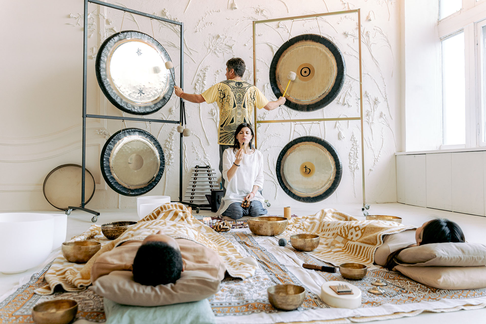

PUJA DE GONG
La Puja de Gong es una Ceremonia Sagrada meditativa de sanación y de toma de conciencia en la cual los Gongs mantienen un sonido sin interrupción y en un volumen moderado durante un tiempo prolongado. Es una meditación en grupo y en silencio donde solo escuchamos el sonido transformador se los Gongs de fondo.
Esta ceremonia de gongs se realiza durante la noche, para aprovechar el ciclo nocturno del sueño. Durante la Puja generalmente se duerme, tambien se puede adortar una postura meditativa o conbinar ambas. De una forma u otra el sonido y la vibración va actuando en nuestros cuerpos. El sonido de armónicos de los gongs generan frecuencias que alteran las ondas cerebrales, hay que tener en cuenta que los gongs producen tonos vivientes que no solo son percibidos por los oídos, sino por todo el cuerpo.

El efecto penetrante de los tonos del gong irradiantes aumenta dentro de la materialidad del cuerpo humano. La mezcla de sonidos que ocurre durante el “gongeo” sostenido, se cree que es un elemento esencial en la sanación, rejuvenecimiento y transformación. Durante la noche los gongs se mantienen sonando a una intensidad media y constante durante siete horas y media, la inmersión en el campo del gong durante este largo tiempo permite intensificar los efectos. Todos los gongs sonando al unísono van trabajando a través de los diferentes ciclos del sueño que tienen lugar durante la noche, incidiendo en cada cuerpo, desde el físico hasta los más sutiles pero realmente, la vibración del sonido permanece en el cuerpo y mente y puede durar horas, días, semanas o incluso más.
Proxima Sesión de Baños de Gong
Ven a disfrutar una noche de relajación y sanación profunda que te aporta la vibración des sonido que 5 gongs proporcionan simultaneamente durante siete horas. Dormirás plácidamente en un viaje sensacional.
- Ropa cómoda
- Saco de dormir
- Un Colchón de camping o colchoneta gordita
- Botella de agua de vidrio para magnetizar